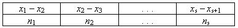
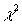
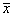

Пусть эмпирическое распределение задано в виде интервального вариационного ряда следующего вида (s — число интервалов группировки):

Для того чтобы вычислить статистику  при нормальном распределении для интервального вариационного ряда, нужно:
=НОРМРАСП(1,82; 2,5; 1,4; 1)
возвращает значения функции Лапласа от z =1,82 при выборочном среднем  = 2,5 и выборочным среднем квадратическом отклонении sx = 1,4.
=ХИ2ОБР(0,05; 5)
Примечание 1. Число степеней свободы принять равным k = s – 3 , где s – число интервалов группировки.
Примечание 2. Малочисленные частоты (ni < 5) следует объединить. При этом нужно откорректировать число степеней свободы, приняв в качестве s число групп выборки, оставшихся после объединения частот.